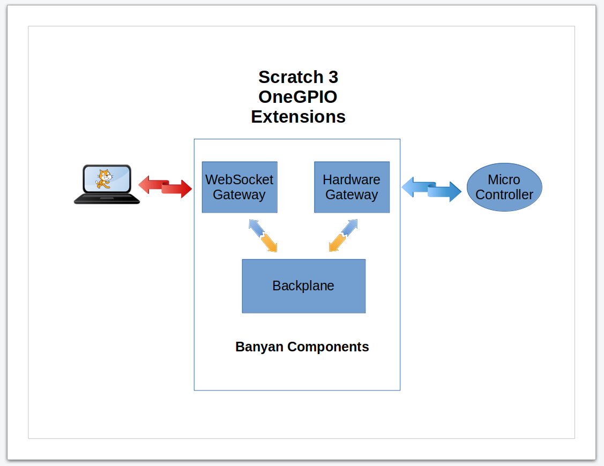

Scratch 3 OneGPIO Software Components

The Scratch 3 OneGPIO extensions consist of two major components.
The Modified Scratch 3 Editor
The first of the major components is the modified Scratch 3 editor, depicted as the terminal on the left side of the illustration above. The modified editor uses all of the code provided by the Scratch 3 team but adds the additional code to create the custom Scratch blocks to support the OneGPIO extensions.
If you would like additional information about how the OneGPIO extensions were created and added to the Scratch 3 editor, please refer to the Bots In Pieces blog.
The OneGPIO Extension Servers
The second major component for each of the OneGPIO extensions is the Extension Server, depicted in the center of the illustration.
Each board type has a specific associated Extension Server, using the Python Banyan Framework to implement the OneGPIO messaging protocol.
The OneGPIO design concept assures excellent performance and simplifies the design and implementation for each extension server.
Each server utilizes three Python Banyan components. The first is the Backplane, a shared message distributor used by all of the extension servers.
Each Extension Server utilizes a unique instance of the WebSocket Gateway, providing a communication channel between the Scratch 3 editor running in the browser, and the Python code interacting with microcontroller hardware. A unique IP port number is assigned to each WebSocket Gateway.
Finally, each Extension Server supports its connected microcontroller using a unique Hardware Gateway. The Hardware Gateway translates the platform-independent OneGPIO control and report messages to hardware-specific messages.
The transport mechanism used between the Hardware Gateway and its associated micro-controller varies, depending upon the micro-controller in use. For example, the Arduino uses a hardwired, USB-Serial interface is used. The Raspberry Pi and ESP-8266, use a WiFi connection.
Copyright (C) 2019-2020 Alan Yorinks All Rights Reserved